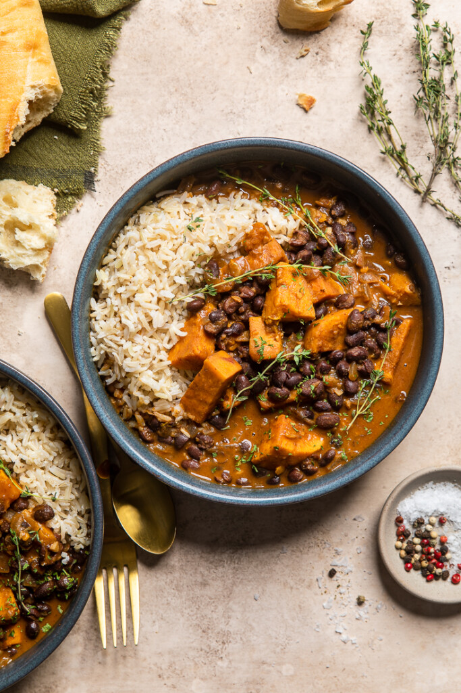

Black Bean Stew

This easy vegan black bean stew is the perfect fall and winter comfort food dish. Simple, filling, and full of plant based nutrients!
Ingredients
- 1 tablespoon olive oil
- 1 medium onion, diced (any color works)
- ½ teaspoon sea salt
- 2 cloves garlic
- 4 sprigs fresh thyme
- 2 15.5oz cans black beans, drained and rinsed (880g)
- 3 cups sweet potatoes, cubed (400g)
- 1 ½ tablespoon smoked paprika
- 1 ½ teaspoon cumin
- 1 teaspoon chili powder
- ½ teaspoon onion powder
- 1 13.5oz can full fat coconut milk (400mL)
- ½ cup vegetable stock (110mL)
- 2 tablespoon sriracha, more or less to taste
Method
- In a large skillet or pot with high walls over medium heat, add oil to heat up.
Add onions and stir with a wooden spoon. Then sprinkle salt over onions and stir every few minutes.
Allow onions to cook until translucent, browning and lightly caramelized. About 6 – 8 mins.
Then stir in garlic and thyme and cook for and additional minute.
- Next add in black beans, sweet potatoes, smoked paprika, cumin, chili powder and onion powder.
Stir together well, then add coconut milk, stock and sriracha (if adding).
Scrape any browning and seasoning at the bottom to incorporate the flavors into the dish.
- Without adjusting the heat, let mixture come to a simmer.
Cover with a lid and cook until sweet potatoes are fork tender, stirring periodically (about 30 – 35 minutes).
- Serve warm with fresh herbs sprinkled over with rice, mashed potatoes, etc. on the side. Enjoy!